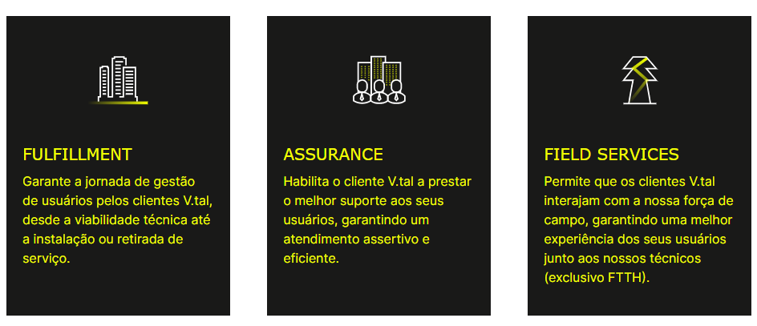
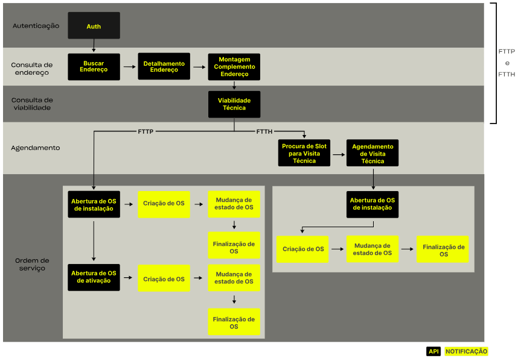
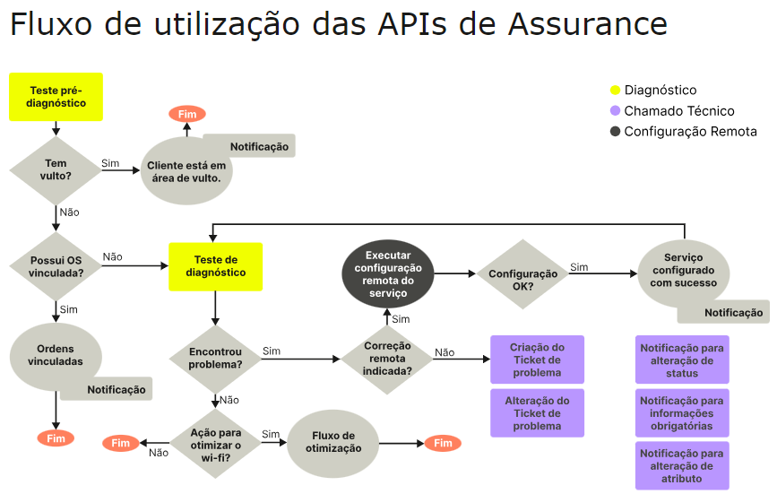

Jornada Portal Dev
Nossos grupos de APIs
Fluxo de utilização das APIs de Fulfillment e Field Services
As APIs de Fulfillment e Field Services possibilitam a jornada de venda ao usuário final, desde o primeiro contato para realizar a consulta de endereço, avaliação de viabilidade de instalação, abertura de ordens de serviços, até a finalização da instalação.

Fluxo de utilização das APIs de Assurance
A jornada de Assurance da V.tal é um modelo padronizado, 100% baseado em APIs automatizadas, que permite ao cliente V.tal realizar o suporte técnico, para atendimento de pós-venda ao usuário final, através do diagnóstico de problemas, configurações remotas e solicitação de abertura de chamado técnico.
